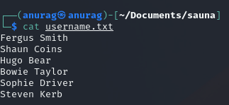
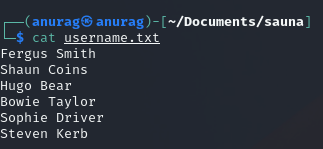

Port 88 - Kerberos
Make a list of usernames from
username-anarchy. We have a list of users from the About Me page.
 

Now let's run username-anarchy:
./username-anarchy --input-file /home/anurag/Documents/sauna/username.txt --select-format first,flast,first.last,firstl
Now we have the usernames, we can use either of the lists to check for AS-REP Roasting.